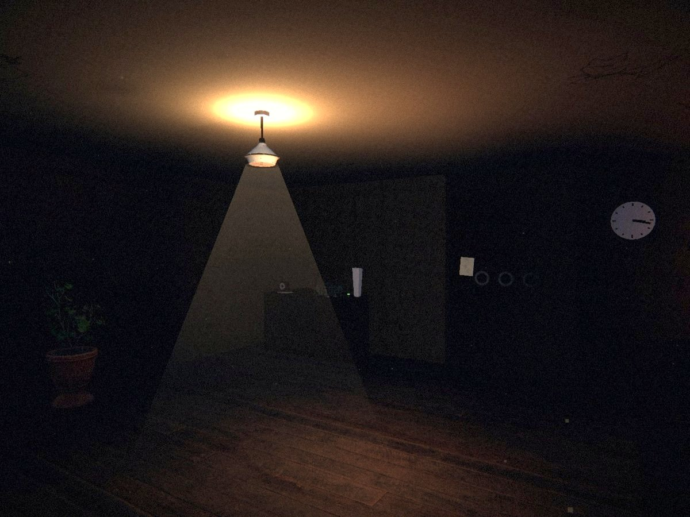
Light
A flashlight that runs down, scarce batteries, a handful of fuses for the whole house. Lighting one room means leaving another in the dark.
Some houses aren't haunted. They remember.
Psychological horror · Investigation · First person · PC · $4.99
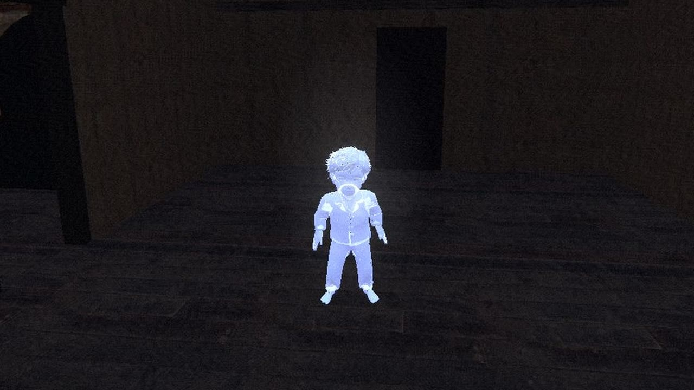
Night of March 17th. Downstairs, the parents were fighting. Upstairs, two brothers played hide-and-seek so they wouldn't have to hear it.
The elder, ten years old, told the little one: “Stay hidden. I'll come and get you when it's over. Promise.”
Nico, six, was never . The living-room clock stopped at ██:██.
Twenty years later, the house was never sold. Nobody lives there. And yet, it .
Touch a blacked-out word to read it. Not all of them.
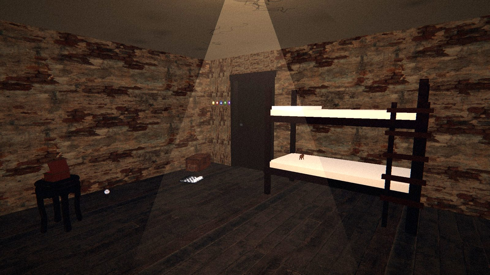

A flashlight that runs down, scarce batteries, a handful of fuses for the whole house. Lighting one room means leaving another in the dark.
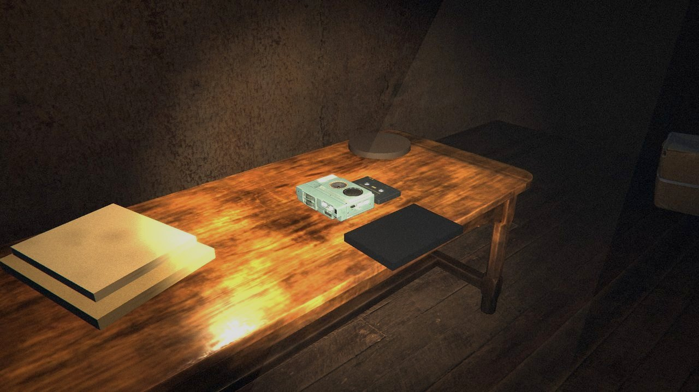
A radio hissing on a forgotten frequency, magnetic tapes, voices. The house talks to anyone who listens.
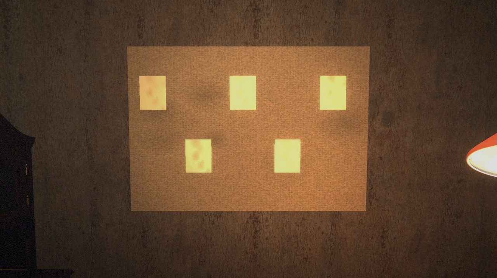
Notes, photographs, notebooks. On the investigation wall, every thread you pull tells a little more of what the family never said.
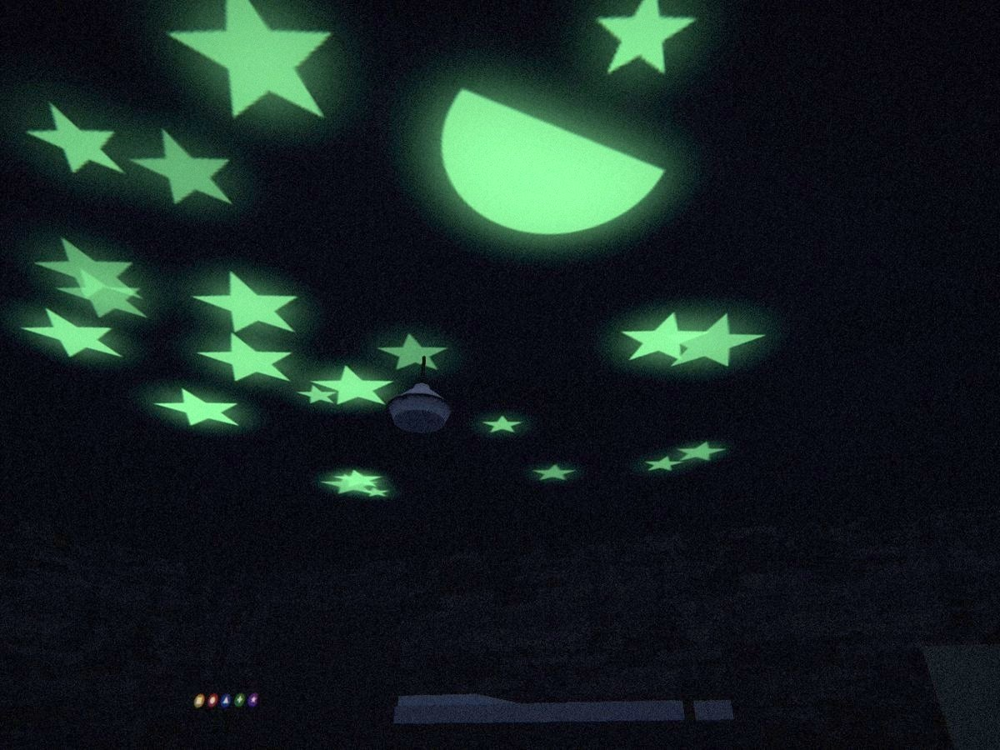
Close your eyes and count, like before. In the dark, something uses the time to come closer.
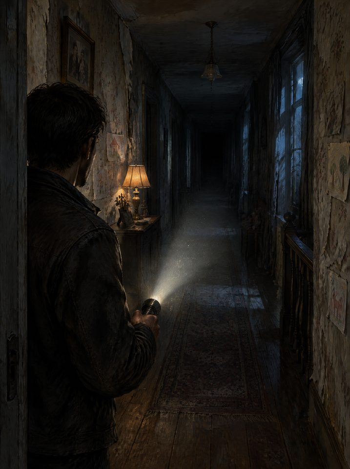
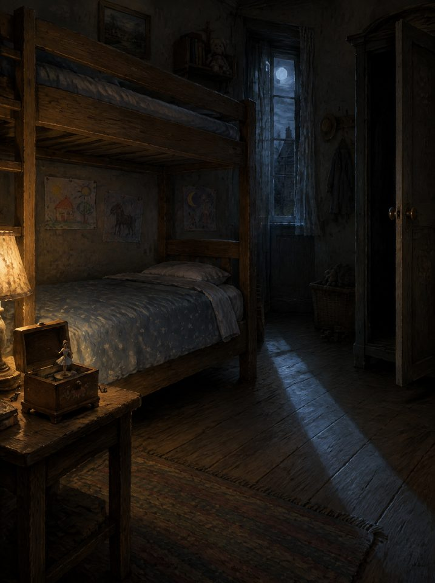
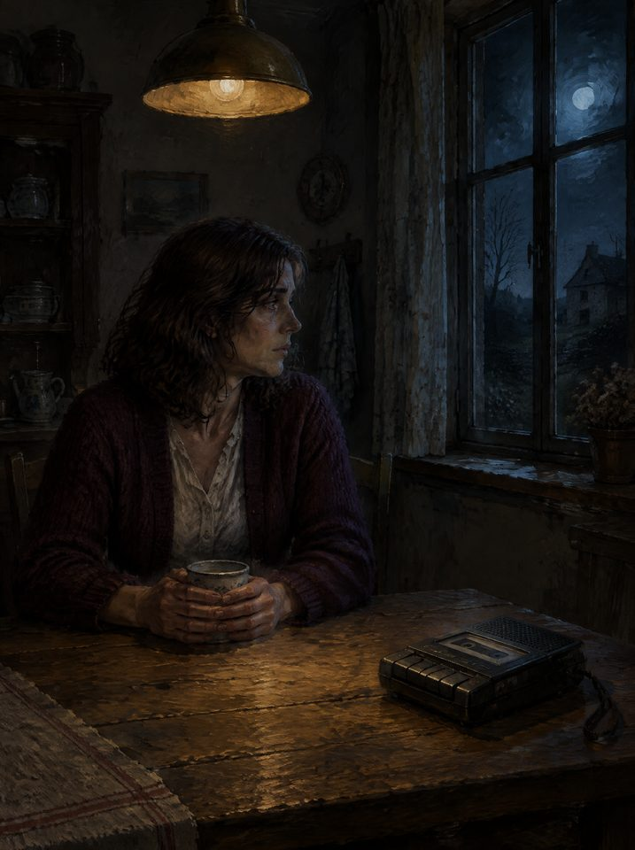
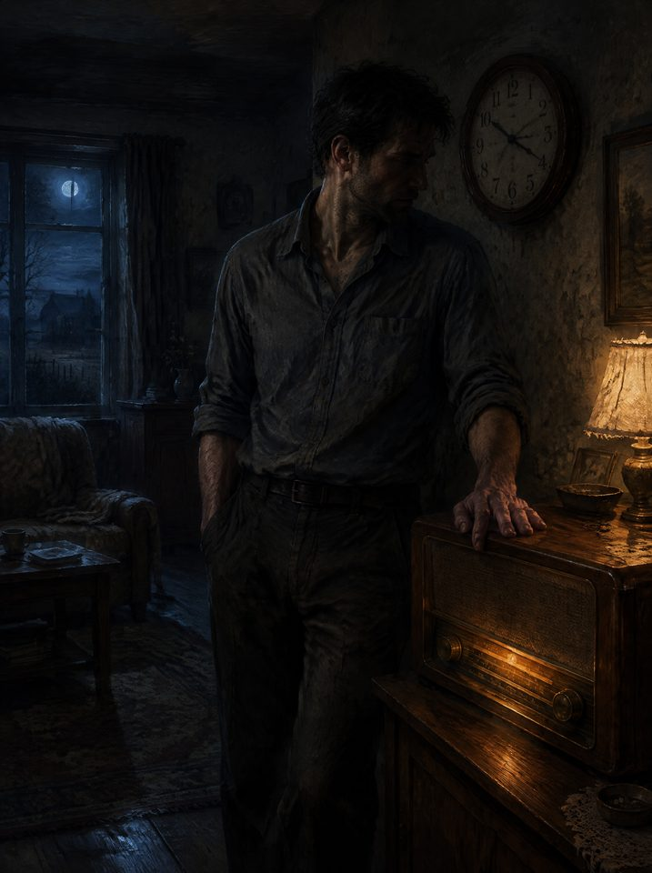
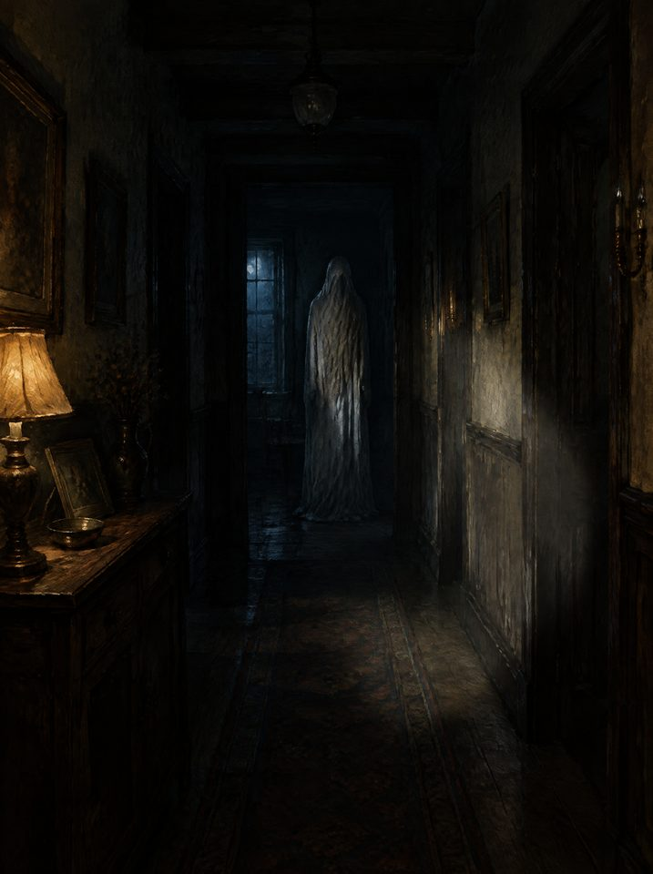
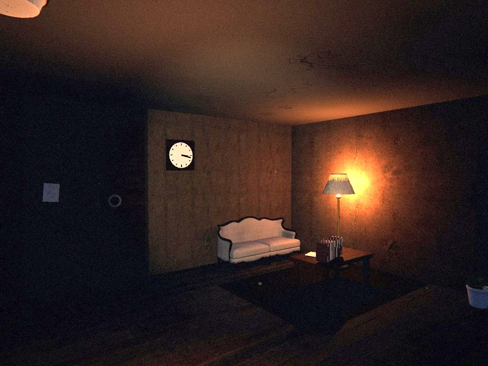
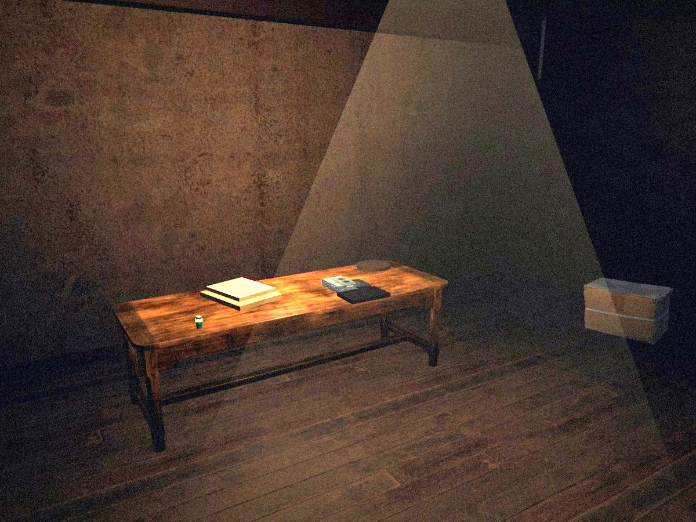
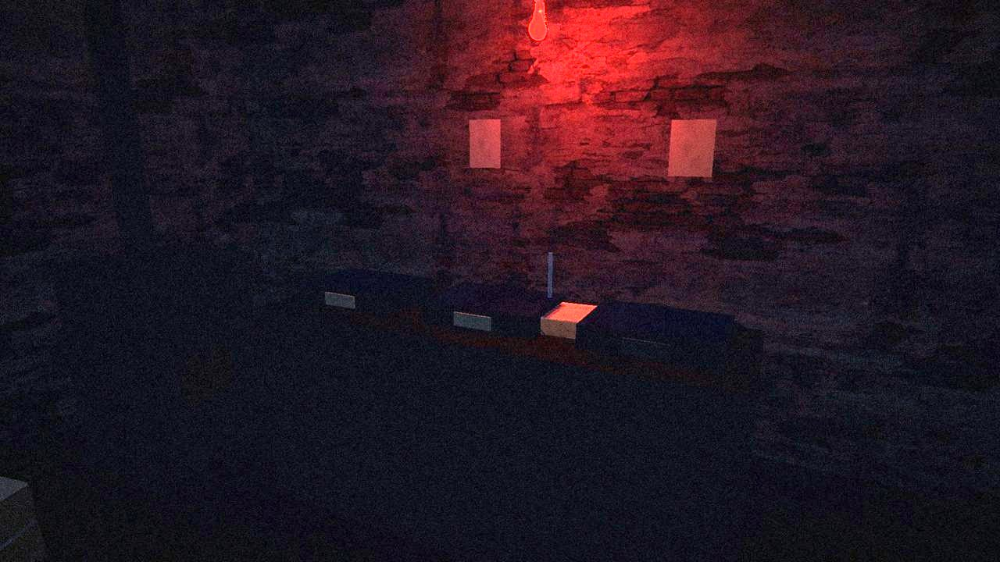
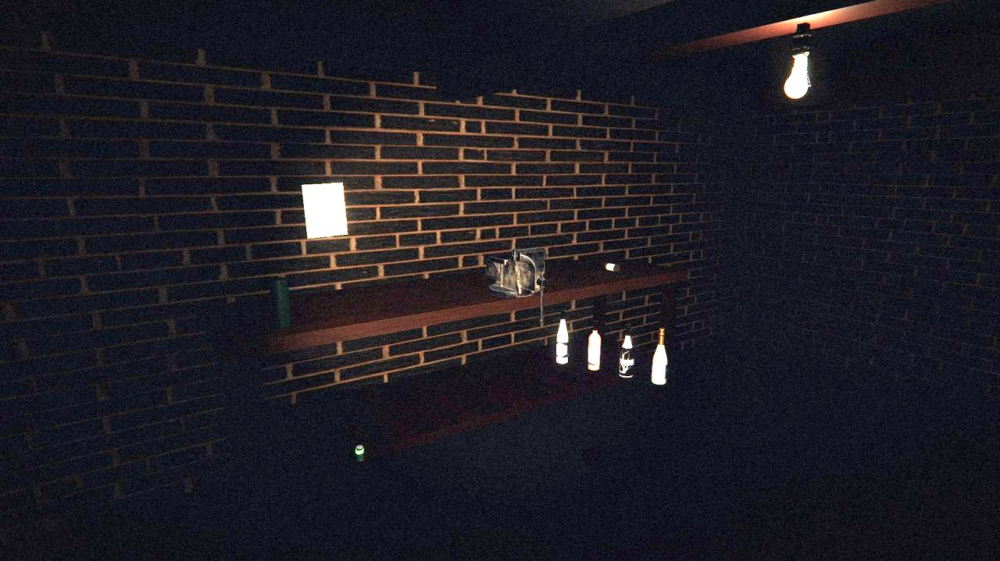
The game has a single quality level: everything maxed out. The two tiers differ by frame rate: Recommended for 60 frames per second, Ultra for 120, on a display that shows them.
| 1080pRecommended60 fps | 1080pUltra120 fps | 4KRecommended60 fps | 4KUltra120 fps | |
|---|---|---|---|---|
| OS | Windows 10 or 11, 64-bit | Windows 10 or 11, 64-bit | Windows 10 or 11, 64-bit | Windows 10 or 11, 64-bit |
| Processor | Intel Core i5-9600K or AMD Ryzen 5 3600 | Intel Core i5-12600K or AMD Ryzen 5 7600 | Intel Core i5-9600K or AMD Ryzen 5 3600 | Intel Core i5-12600K or AMD Ryzen 5 7600 |
| Graphics | NVIDIA GTX 1060 6 GB or AMD RX 580 8 GB | NVIDIA RTX 3060 or AMD RX 6600 XT | NVIDIA RTX 2070 Super or AMD RX 5700 XT | NVIDIA RTX 3080 or AMD RX 6800 XT |
| Memory | 16 GB | 16 GB | 16 GB | 16 GB |
| Storage | 600 MB | 600 MB | 600 MB | 600 MB |
Measured on the development machine (laptop Intel Core i9-10980HK, NVIDIA RTX 2080 Super): 60 frames per second on median, at 1080p and at 4K, with dips towards 40 in the busiest rooms. The other configurations are estimated equivalents based on that measurement. Good to know: the game leans on the processor more than the graphics card, so 4K costs barely more than 1080p. The "Render resolution" setting is there if needed. Memory: the game itself uses about 6 GB (measured over a complete 44-minute playthrough, with no growth over time), hence the 16 GB advised.
The Steam page opens soon: the wishlist comes with it.